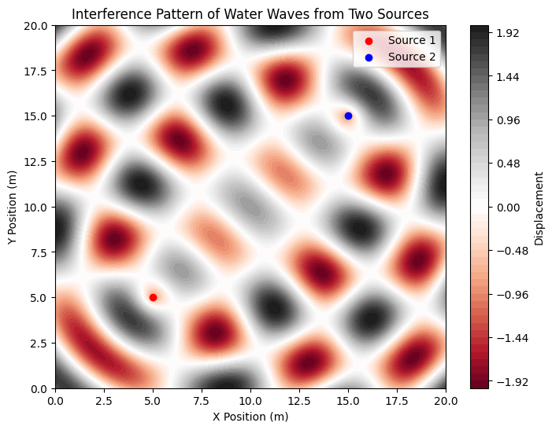
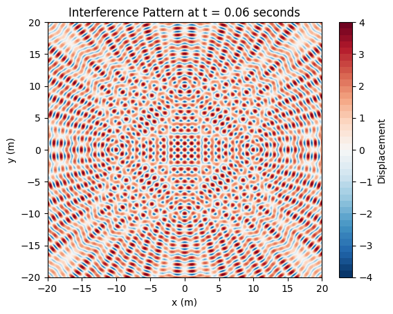
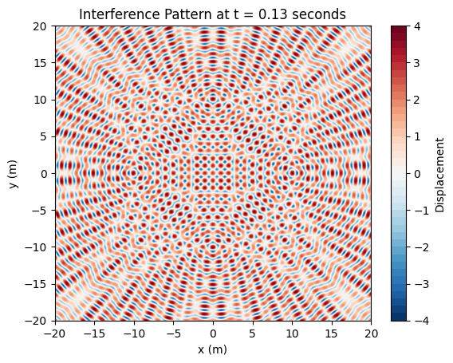

Problem 1
Problem 1: Interference Patterns on a Water Surface
1. Introduction
Interference is a fundamental wave phenomenon that occurs when two or more waves overlap. On a water surface, ripples from multiple sources interact, creating patterns of constructive and destructive interference.
This problem explores wave interference from multiple point sources, arranged at the vertices of a regular polygon. The goal is to visualize and understand how the superposition of waves results in complex patterns.
2. Theoretical Background
Single Wave Equation
A circular wave propagating from a single point source located at \(\mathbf{r}_i\) is given by:
where:
- \( A \) = amplitude of the wave,
- \( k = \frac{2\pi}{\lambda} \) = wave number (related to wavelength \( \lambda \)),
- \( \omega = 2\pi f \) = angular frequency (related to frequency \( f \)),
- \( d_i = |\mathbf{r} - \mathbf{r}_i| \) = distance from source \( i \) to point \( \mathbf{r} \),
- \( \phi \) = initial phase of the wave.
Superposition of Multiple Waves
If there are \( N \) sources, each emitting a wave, the total displacement at a point \( \mathbf{r} \) is:
This sum determines the interference pattern on the water surface.
- Constructive Interference: Occurs when waves add up (\( \Delta \phi = 0, 2\pi, 4\pi, ... \)).
- Destructive Interference: Occurs when waves cancel out (\( \Delta \phi = \pi, 3\pi, 5\pi, ... \)).
By positioning sources at regular polygon vertices, we observe symmetrical patterns that depend on the number of sources.
3. Computational Simulation
We will:
- Choose a regular polygon (e.g., equilateral triangle, square, pentagon).
- Generate waves from each vertex using the superposition principle.
- Visualize constructive and destructive interference with color maps.
Python Implementation
  
4. Analysis of Interference Patterns
1. Triangle (\(N = 3\))
- Forms a sixfold symmetric pattern with alternating bright and dark regions.
- Strong central interference due to wave overlap.
2. Square (\(N = 4\))
- Produces a checkerboard-like interference pattern with symmetry along diagonals.
- Alternating constructive/destructive zones between sources.
3. Pentagon (\(N = 5\))
- Creates a more intricate star-like pattern due to additional wave interactions.
- Shows radial symmetry with high interference at center.
5. Real-World Applications
- Water Waves 🌊
- Explains ripples in ponds when multiple droplets fall.
-
Helps in harbor design to reduce unwanted wave interference.
-
Acoustics & Sound Waves 🎶
- Used in concert hall design to optimize sound distribution.
-
Explains noise cancellation in headphones.
-
Optical Interference 🔬
- Similar principles apply to laser interferometry (LIGO for gravitational waves).
- Used in holography and thin-film coatings for anti-reflective glass.
6. Extensions & Further Research
🔹 Varying Phase Differences: Explore how different initial phases \( \phi \) change the patterns.
🔹 Non-Coherent Sources: Introduce randomness in phase to simulate real-world variations.
🔹 3D Simulations: Extend to surface ripples in fluid dynamics studies.
7. Conclusion
By simulating interference from multiple sources, we visualized wave superposition patterns for different regular polygons. These patterns reveal the beauty and complexity of wave physics, with applications in acoustics, optics, and engineering.